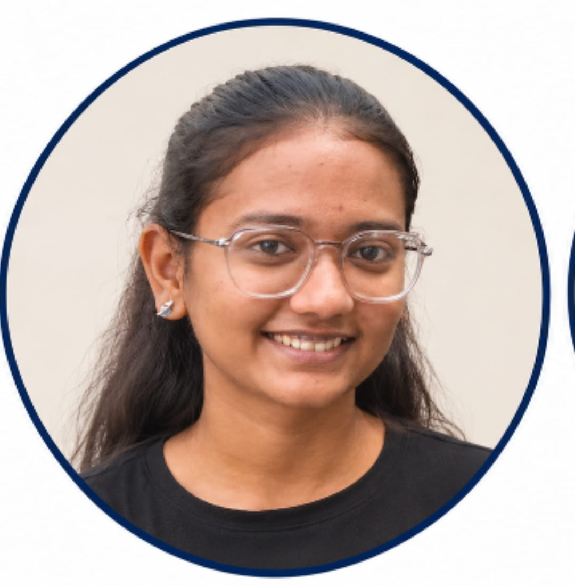

01
Donate
Donors list surplus food with its quantity, expiry time and pickup location.
FOR FOOD DONORSEvery day, good food goes uneaten while people go without. SharePlate brings donors and NGOs together to change that, one meal at a time.

Surplus food doesn't have to become wasted food. A hostel kitchen, a campus canteen or a community event can become the starting point of something much better.
SharePlate makes it easier for donors to offer available food and for NGOs to discover, claim and collect it. We believe that food should reach people, not landfills.
Join the movement ↗Give surplus food a useful purpose instead of letting perfectly edible food go to waste.
Bring food donors and organisations together through one accessible platform.
Make food recovery more organised, accessible and community-driven.
Turning surplus into support shouldn't be complicated. Here's how SharePlate makes it happen.
Donors list surplus food with its quantity, expiry time and pickup location.
FOR FOOD DONORSNGOs browse available donations and claim food that they can collect.
FOR NGOSThe donor updates the donation status so everyone can follow its journey.
FROM DONATION TO PICKUPSharePlate is built around a simple idea: recovering surplus food can support communities, encourage responsible consumption and contribute to a more sustainable future.
End hunger, achieve food security and improve nutrition.
We connect surplus food donors with NGOs that can coordinate collection and distribution to people who need food support.
Reduce waste and make better use of the resources we already have.
Our platform encourages food recovery and redistribution, helping edible surplus find a purpose instead of being discarded.
Take action to address climate change and its environmental impact.
Preventing edible food from becoming waste can help reduce the environmental burden associated with food disposal.
Food waste is not just about what ends up in the bin. It also represents the land, water, energy, transport and human effort used to produce that food.
When organic waste decomposes in landfills, it can release methane, a powerful greenhouse gas that contributes to climate change.
By helping edible surplus reach people instead of disposal sites, SharePlate aims to encourage a more thoughtful and resource-efficient food system.
Natural resources used to grow food should not be wasted unnecessarily.
Producing, storing and transporting food all require energy.
Decomposing organic waste in landfills can generate methane emissions.
Our contribution is a work in progress. Environmental benefits depend on successful food recovery and distribution; SharePlate does not currently claim independently measured carbon or resource savings.
A shared vision, different strengths and one common goal: making food recovery easier and building a more responsible community.
Leading the vision, product direction and development of SharePlate.
Driving the brand, communication and outreach that bring the SharePlate community together.

Supporting financial planning and responsible resource management for the platform.